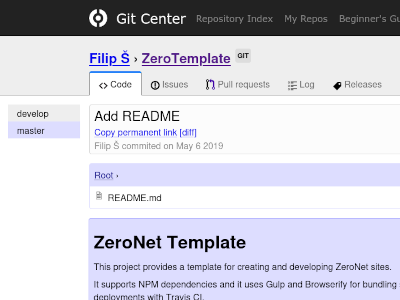

I used to be active on the decentralized network ZeroNet as gitcenter for a large portion of my life and, among other things, developed a few services for the network, the most popular ones being:
-
Git Center (2017—2018) — A decentralized GitHub alternative supporting Git and Mercurial repositories
-
Kiwipedia (2018) — A wiki for ZeroNet with support of mirroring Wikipedia
-
Name.YO (2019—2021) — An alternative DNS provider-like service
I was one of the lead developers of the network and developed a few plugins for it, bringing real-time communication to ZeroNet:
-
0Play (2018) — The first demonstration of the capabilities: a chat, chess and tic-tac-toe games
-
Instant Messenger (2018) — An unfinished Telegram/WhatsApp-like alternative
-
PeerMessage (2018—2019) — A plugin enabling decentralized real-time communication
-
StreamZ (2018—2019) — A Twitch-like video streaming service
-
zIRC (2019) — A simple closed-group IRC-like chat

-
ZeroFile (2017) — Simple file storage
-
CodeR (2017—2018) — JSFiddle/CodePen alternative with client-side CSS/JS transpiling support
-
ZeroMailProxy (New Year of 2018) — A tool for sending and receiving ZeroNet mail via a local SMTP/POP server
-
Zero Management System (2018) — An unfinished CMS
-
/z/place (2018) — An ugly clone of r/place
-
Gopher (2018) — An alternative gopher frontend to zites supporting the protocol
-
ThunderProxy (2018) — A tool for accessing ThunderWave with a local IRC server
-
BackgroundProcessing (2018—2020) — An attempt to enable efficient server-side computations by running user-provided Python code in a sandbox
-
Ark (2019) — A plugin bringing backwards-compatible multi-cryptography capabilities to the official ZeroNet client
-
ZeroTalk-Matrix (2019) — A bridge between Matrix and ZeroTalk
I also wrote a few libraries some people found useful:
And documentation, of course—I love writing: